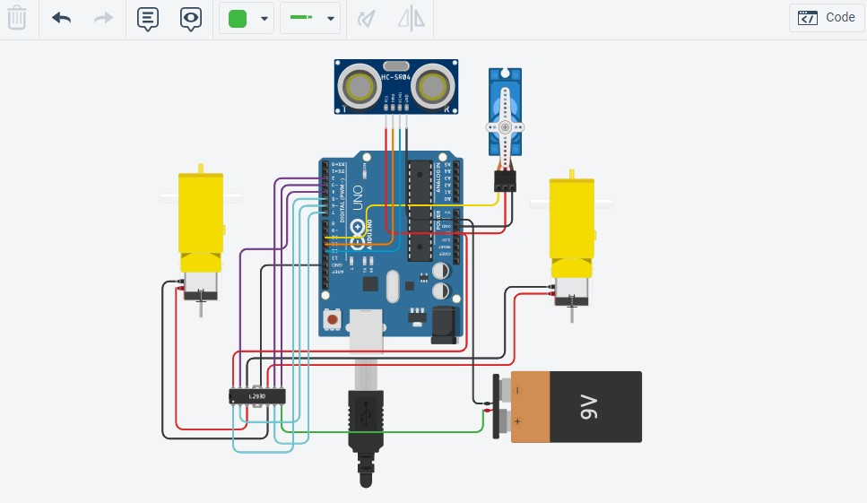
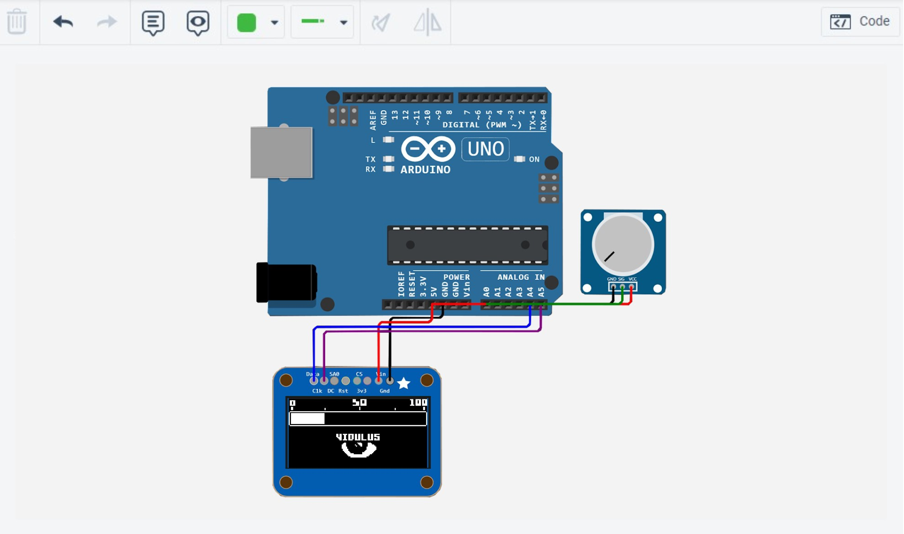
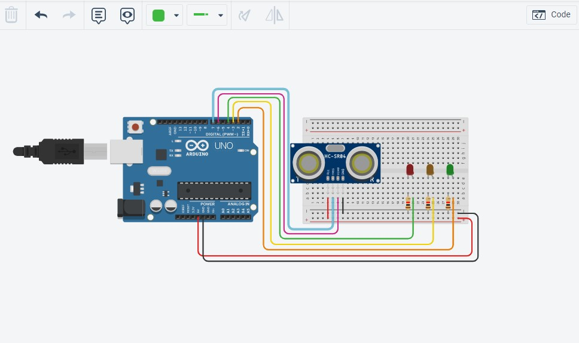

Arduino Suitcase
This is the last project I did on my last highschool year.
The final product is a suitcase that we can ride to transit in the airports.
See code

Arduino Suitcase OLED part
For this part, I used another simulation website that allow me to use Oled
screen's as i wish. Because Tinkercad dosn't have oled screen's.
See code

Arduino Rangefinder
This Rangefinder was made during the COVID-19 epidemic, to keep the social
distance's between students. There two differents models.
See code